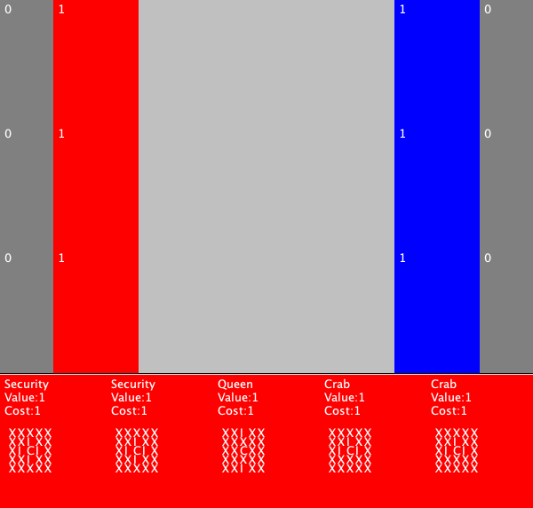
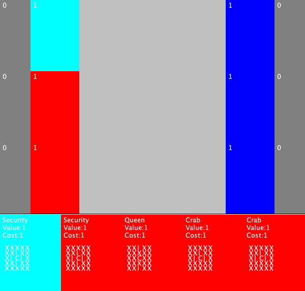
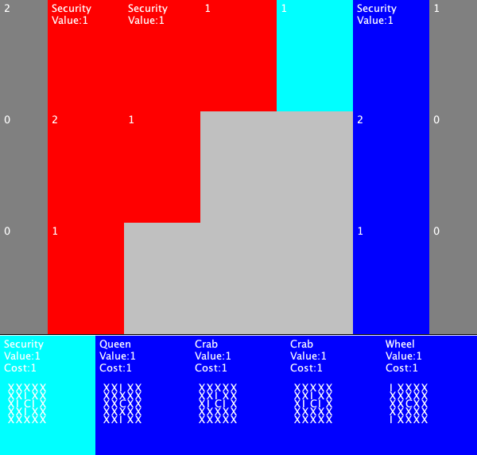
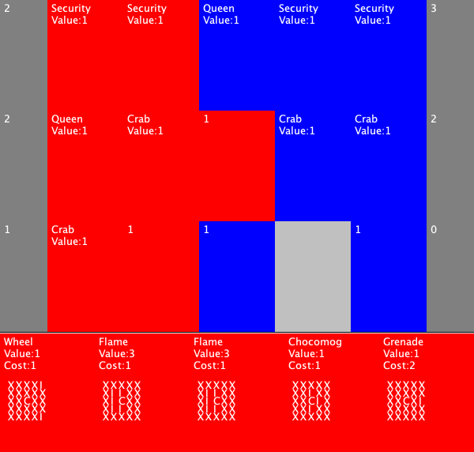
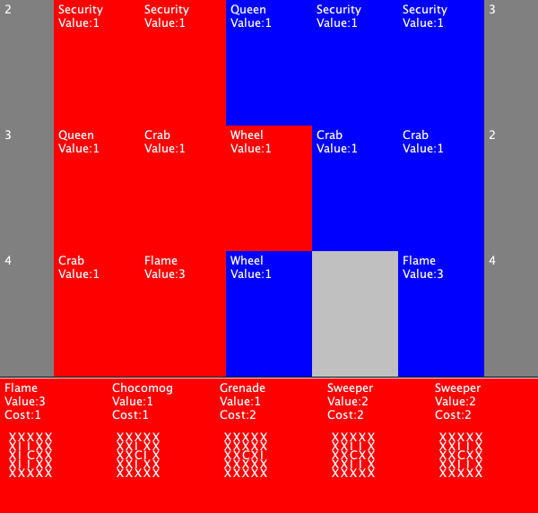

Sanguine Card Game
The goal of this project was to demonstrate understanding of object-oriented design principles, thorough testing practices, and the MVC architecture by recreating a two-player strategy card game in Java with an interactive Swing GUI.
Technologies:
- Java
Source code is private. Available upon request.
Showcase





